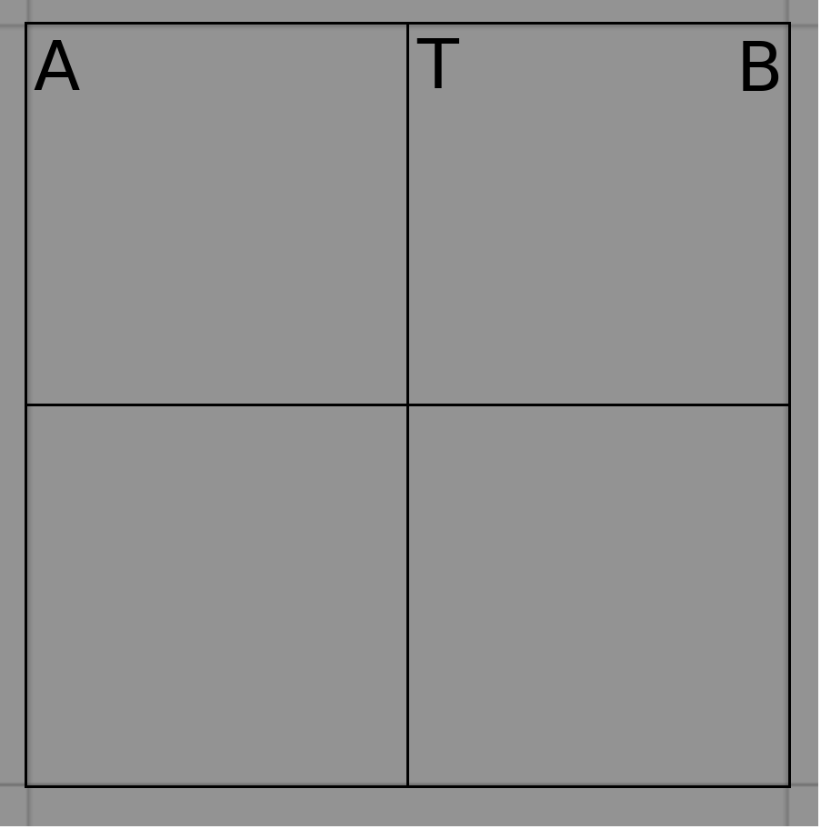

CSE 571 - Spring 2022 - P1¶
Plagiarism Warning¶
Powerful copy-detection systems will be used as part of grading, so please DO NOT submit/use any piece of code that is not your own work. These systems can easily catch instances where users change variable names, etc. from copied code.
If you are stuck at any point, you can approach the professor or TA for help.
Programming Project 1 - Search¶
Welcome to Programming project 1 for CSE 571 - Spring 2022.
This document contains several instructions to help you with the running and submitting the project.
Setting up the hw1 Directory¶
We assume that you have completed the setup as instructed using the Virtual Machine provided for Programming Project 1 on Canvas. The provided virtual machine already contains the
hw1directory in~/catkin_ws/src/.If you need to access the “hw1” directory separately, you can also download the “hw1.zip” file from Canvas and unzip it. Copy the
hw1folder that was unzipped to~/catkin_ws/src/.cp -r <download_path>/hw1/ ~/catkin_ws/src/
Change the permission of all Python scripts to make them executable.
chmod u+x ~/catkin_ws/src/hw1/scripts/*.py
Run catkin_make from your catkin workspace.
cd ~/catkin_ws && catkin_make
Source setup.bash.
source ~/catkin_ws/devel/setup.bashSet up the environments.
cd ~/catkin_ws/src/hw1/ && ./env_setup.sh
Useful tip you can use throughtout the project: If you ever run into issues and need to kill the running Gazebo or roscore processes, run the following command. You can also use this command when the gazebo opens up but the Turtlebot doesn’t move.
cd ~/catkin_ws/src/hw1/ && ./hw1_kill.sh
Environment Description¶
Environment 1 - Can World
The image below shows an example of the can environment that the Turtlebot3 robot operates in. The goal is the red can; all other cans are obstacles that need to be avoided.
{kind=link}
Environment 2 - Cafe World
The image below shows an example of the cafe environment that the Turtlebot3 robot operates in. The goal is the food placed on the kitchen counter; all the tables are obstacles that need to be avoided.
{kind=link}
Some of the terms that we use throughout the programming project for both the environments are:
- Grid Dimensions: Size of the square grid.
Note
Actual grid size used for navigation is different from what is seen in Gazebo environment. Each of the square seen in Gazebo is divided into 4 equal squares.

Fig 1. Grid visible in Gazebo
Fig 2. Actual navigation grid
Hence, if you have to go from point A to B in Gazebo environment using
MoveFaction, you will have to giveMoveFcommand twice. If you give theMoveFcommand once, the TurtleBot will stop at T.
Goal: A can of red color (for Can World), and food on the kitchen counter (for Cafe World).
Obstacles: Smaller cans obstructing the TurtleBot’s path in Can World, and tables obstructing the TurtleBot’s path in Cafe World.
- Actions: Actions includes {
MoveF,TurnCW,TurnCCW}. Move actions move the turtlebot forward along an edge, and Turn actions rotate it clockwise or counterclockwise. - Cost of the
MoveFaction is 1. - Cost of the
TurnCWandTurnCCWactions is 2.
- Cost of the
- Actions: Actions includes {
- State: State of the Turtlebot represented as (x, y,
 ) where x and y are coordinates, is an orientation in {NORTH, SOUTH, EAST, WEST}.
) where x and y are coordinates, is an orientation in {NORTH, SOUTH, EAST, WEST}.
- State: State of the Turtlebot represented as (x, y,
{kind=link}
Implementing Search Algorithms¶
- Modify the
graph_search(),f_gbfs(),f_ucs(),f_astar(), andcompute_g()methods in the search.py file. We have provided a basic template where you should write your code. - Do not modify any other file. Make all the changes you need strictly in search.py file only. You can add more functions in search.py, if needed.
- You can use Visual Studio Code, Sublime Text, Gedit, or any other editor that you’re comfortable with to implement.
- Unless otherwise specified, use the Manhattan heuristic whenever you need to return a heuristic value.
- Modifying evaluate.py
- Do not modify the function signatures of existing methods.
- Remove the
raise NotImplementedErrorcode block and replace it with the correct code to the compute the g-value or f-value and return this value. - The returned value must be a positive integer or 0.
- Remove the
graph_search()has 2 parameters passed to it.- algorithm - A string that represents which algorithm is running. This is passed as a command line argument to the program.
- The required algorithms you need to handle are:
- bfs - Breadth First Search
- ucs - Uniform Cost Search
- gbfs - Greedy Best First Search
- astar - A* Search
- custom-astar - (Extra credit) A* with a custom heuristic.
- time_out - This is used for timing out the code if it takes too long to run. We use it for autograding, and we use a default value of 300 seconds. You can ignore it for now.
compute_g()has 3 parameters passed to it.- algorithm - A string that represents which algorithm is running. This is passed as a command line argument to the program.
- The required algorithms you need to handle are:
- bfs - Breadth First Search
- ucs - Uniform Cost Search
- gbfs - Greedy Best First Search
- astar - A* Search
- custom-astar - (Extra credit) A* with a custom heuristic.
- node - A Node (node.py) object that is being evaluated in the search
- tree. Note that each node has all its fields already initialized prior to calling these functions. More information about the Node class can be found in the API located at the end of this document..
- goal_state - A State (problem.py) object that represents the goal state.
- More information about the State class can be found in the API located at the end of this document.
- All three of
f_gbfs(),f_ucs(), andf_astar()have 2 parameters passed to them. - node - A Node (node.py) object that is being evaluated in the search
- tree. Note that each node has all its fields already initialized prior to calling these functions. More information about the Node class can be found in the API located at the end of this document..
- goal_state - A State (problem.py) object that represents the goal state.
- More information about the State class can be found in the API located at the end of this document.
- All three of
Testing your Implementation¶
Follow these steps to locally test your implementation.
Fill in the necessary blocks in search.py by removing the raise NotImplementedError and replacing it with your code.
If you choose not to implement an algorithm (for example the extra credit work) simply leave the statement unchanged in
compute_g() for that algorithm and in f_<algorithm>().
Once done, you need to execute rosrun hw1 search.py with the appropriate algorithm and the environment.
For example, If you implemented compute_g() and f_ucs() for “ucs” and “cafeWorld” environment:
rosrun hw1 search.py --algorithm ucs --env cafeWorld
This will also post plenty of output to your console giving you some valuable information about your implementation including any errors that were encountered. If the error field is None then that means that your implementation ran without issues.
==========================
Dimension..........: 5
Obstacles..........: 0
Seed...............: 1599124437
Environment........: cafeWorld
Algorithm..........: ucs
Error..............: NotImplementedError
Time Taken.........: 0.01
Nodes expanded.....: 0
Plan Length........: 0
Plan...............: []
In the code block above, the Error output is not None. This means that there were errors encountered and you would need to debug the implementation. You can modify any file to debug your code, however, your final test code should only modify search.py and leave all the other files untouched.
search.py¶
search.py contains several options that you can specify to change the world generated so that you can test different worlds.
rosrun hw1 search.py -h
usage: search.py [-h] [--dimension DIMENSION] [--obstacles OBSTACLES]
[--seed SEED]
[--algorithm {all,bfs,ucs,gbfs,astar,custom-astar}]
[--submit] [--output-file OUTPUT_FILE] [--env ENV]
optional arguments:
-h, --help show this help message and exit
--dimension DIMENSION
The dimension 'nxn' of the n x n grid.
--obstacles OBSTACLES
The number of obstacles in the grid.
--seed SEED The random seed
--algorithm {all,bfs,ucs,gbfs,astar,custom-astar}
The algorithm to run
--submit Run the experiments required for submission
--output-file OUTPUT_FILE
Store the output in the specified file
--env ENV Choose environment b/w cafeWorld and canWorld
For example, to generate a “canWorld” with a dimension of 5x5 and 2 obstacles and test with the “ucs” algorithm, enter the following in the terminal.
rosrun hw1 search.py --dimension 5x5 --obstacles 2 --algorithm ucs --env canWorld
The output contains all data to reproduce the results. You can use --algorithm all to run all the algorithms.
Checking Execution on Turtlebot3¶
Once you have an implementation working, you can run the solution found by your algorithm on Gazebo. To do this, you need to provide an additional argument that instructs search.py to save the results to an output file. Refer the command below and use it for appropriate dimensions, obstacles, algorithm, and environment.
rosrun hw1 search.py --output-file /tmp/test.csv
The above command will run the default algorithm (all) along with the default
dimension, obstacles and seed for the world and store the output in
/tmp/test.csv. You can open this file in software like Excel or a simple
text editor like Sublime Text.
To run Gazebo, execute
rosrun hw1 gazebo.py --input-file /tmp/test.csv
This will open Gazebo and run each solution in the specified file.
If you only want to run a single solution in the specified file (will run faster), you can pick which solution to execute by specifying the line number that the solution occurs in the solution file (lines are numbered starting with 1).
rosrun hw1 gazebo.py --input-file /tmp/test.csv --line 3
This will run the solution occuring at line 3 (provided the file has 3 lines) and will exit after that.
Using Test Cases¶
We have also provided a list of test cases ~/catkin_ws/src/hw1/hw1_testcases.csv using which you can verify the correctness of your implementation. Each entry is similar to the output generated when your algorithm runs successfully.
Each row has the following columns:
Dimension, Obstacles, Seed, Algorithm, Time, Nodes Expanded, Plan Length, Error, Plan, Environment
To verify your output use the parameters exactly same as given in a row and execute that using your algorithm.
For eg: the first row is:
4x4, 2, 200, bfs, 1.44, 347, 14, None, MoveF_MoveF_MoveF_MoveF_MoveF_TurnCCW_MoveF_MoveF_MoveF_MoveF_MoveF_ MoveF_MoveF_MoveF, canWorld
Here the dimension is 4x4, number of obstacles are 2, random seed is 200, algorithm is bfs, and the environment is canWorld.
To verify your output, run the command:
rosrun hw1 search.py --dimension 4x4 --obstacles 2 --seed 200 --algorithm bfs --env canWorld
The output will look something like this:
$ rosrun hw1 search.py --dimension 4x4 --obstacles 2 --seed 200 --algorithm bfs --env canWorld
Ready!
World generated
==========================
Dimension..........: 4x4
Obstacles..........: 2
Seed...............: 200
Environment........: canWorld
Algorithm..........: bfs
Error..............: None
Time Taken.........: 1.80
Nodes expanded.....: 347
Plan Length........: 14
Plan...............: ['MoveF', 'MoveF', 'MoveF', 'MoveF', 'MoveF', 'TurnCCW', 'MoveF', 'MoveF', 'MoveF', 'MoveF', 'MoveF', 'MoveF', 'MoveF', 'MoveF']
Note that the time taken will not match as it depends on your system configuration, and many other things. But all other values should match for the testcase to pass.
In the hw1_testcases.csv file, we concatenated all the actions, with each action separated by an underscore (_).
Preparing your Submission to Submit on Canvas¶
1. When you have finished implementing all the algorithms you need to use the submit mode of search.py. It’ll work for either/both environments you tried.
Run the following command to prepare the submission files:
rosrun hw1 search.py --submit
This will run 100 different world combinations and each one of them will be run with a time limit of 5 mins (300 seconds). A file called hw1_results.csv will be created in the ~/catkin_ws/src/hw1/scripts/ directory which will contain results of the run. HINT: Make sure that there are no TimeoutErrors in the results. If there are, then its likely your implementation is incorrect.
Warning
The submission runs several tests so make sure you run this command plenty of time before the submission deadline.
Note
Submit mode will not produce Debug output. Instead hw1_results.csv
will contain the Debug output in a .csv format.
Execute the following to ensure that the hw1_results.csv file was created.
ls ~/catkin_ws/src/hw1/scripts/
/home/cse571/catkin_ws/src/hw1/scripts/hw1_results.csv
2. The next step is to create the plots. You can open the hw1_results.csv in software like Excel or write your own code to process the file and generate the required plots (see the question on Canvas for the description of what needs to be plotted).
Add all the plots to a pdf with each clearly marked with the correct task/question number.
Submitting Your Project¶
You now need to submit 3 files on Canvas. The three files should be named as:
- <first name>_<asu_id>_p1_plots.pdf
- <first name>_<asu_id>_p1_results.csv
- <first name>_<asu_id>_p1_search.py
Upload the three files on Canvas. Files with incorrect names will not be graded.
Warning
Please make sure that you submitted all three files. Canvas may show an assignment as submitted even with only one file upload also.
Tips and Suggestions¶
- The API section below contains all getter and setter functions required to complete this project.
- Test your algorithm with smaller grid or smaller number of obstacles to see if it works as expected.
- Since the obstacles and mazes are generated dynamically, sometimes it is possible that there is no path from initial state to goal state. If your algorithm returned empty action_list, check once if there is path from initial state to goal state.
- You need not start a new run to record running time if there is no path between initial state and goal state. The time taken for this case should also be considered while taking average of 5 runs.
- At times, the TurtleBot takes some time to perform an action, so wait for some time if no movement is visible.
- Check the Discussions on Canvas to see if the problem you are facing is already answered. If not, start a new discussion.
Hints for Designing the Extra Credit Heuristic¶
In the section Environment Description, you will find that action costs are different for different actions.
Remember the cost trade-off. Your heuristic must not be too expensive to compute. One extreme case is to run Breadth First Search from a state and return the plan length from that state as the heuristic value. This gives you a very good estimate, since you run Breadth First Search internally however the time to compute a single state’s heuristic value is quite large which makes it effectively useless since we could have just done a Breadth FS anyways. Doing Breadth First Search or any other of the implemented algorithms as the extra credit heuristic won’t get you extra credit!
API¶
class State¶
class Node¶
-
class
node.Node(state, parent, depth, action, action_cost)[source]¶ Initializes the node data structure of the search tree.
- state: State
- The concrete state that this node represents.
- parent: State
- The parent node of this node.
- depth: int
- The depth of this node.
- action: Action
- The action from the parent node’s state that lead to this node.
- action_cost: int
- The cost of the specified action.
None
class PriorityQueue:¶
-
class
priority_queue.PriorityQueue[source]¶ A class that implements the Priority Queue for search algorithms.
This priority queue is a min-priority queue.
Initializes this priority queue.
-
contains(state)[source]¶ - state: State
- The state to be checked.
- bool
- True if the state is present in the priority queue, False otherwise.
-
is_empty()[source]¶ - bool
- True if the priority queue is empty, False otherwise.
It is possible that the priority queue contains elements but is empty. In this case, all elements in the priority queue are invalid elements.
-
class Helper¶
-
class
problem.Helper[source]¶ This class provides the methods used to control TurtleBot.
- Example:
from problem import Helper h = Helper() init_state = h.get_init_state()
-
get_actions()[source]¶ This function returns the list of all actions that a TurtleBot can perform.
Returns: List of actions Return type: list(str) - Example:
from problem import Helper h = Helper() possible_actions = h.get_actions()
Note
The code calling this API should check if the actions are applicable from the current state or not.
-
get_goal_state()[source]¶ This function calls returns the goal state.
Returns: Goal state Return type: State Raises: ServiceException: When call to rospy fails. - Example:
from problem import Helper, State h = Helper() initial_state = h.get_initial_state() goal_state = h.get_goal_state() if initial_state == goal_state: print "TurtleBot is already at Goal"
Note
The default orientation returnded is EAST. Any piece of code using this method should ignore the orientation to check for goal state.
-
get_initial_state()[source]¶ This function calls get_initial_state service to recive the initial state of the turtlebot.
Returns: Initial state of the TurtleBot Return type: State Raises: ServiceException: When call to rospy fails. - Example:
from problem import Helper, State h = Helper() initial_state = h.get_initial_state()
-
get_successor(curr_state)[source]¶ This function calls get_successor service with current state as input and receives a dictionary as output. Possible actions are key to this dictionary and the value of each action is the state that can be reached by applying that action and the corresponding cost.
Parameters: curr_state (State) – current state of the TurtleBot Returns: An ordered dictionary of actions {action_i : (state_i, cost_i)} such that applying action_i on curr_state results in state_i and it incurs a cost cost_i. Return type: OrderedDict {str: tuple(State, float)} Raises: ServiceException: When call to rospy fails. - Example:
from problem import Helper, State h = Helper() initial_state = h.get_initial_state() possible_successors_dict = h.get_successor(initial_state)
Warning
Process the output of this function in the same order it is returned. If you need to break ties between multiple nodes, use the dictionary element that appears earlier in the dictionary returned by get_successor(). Since this is an ordered dictionary, the order will be preserved unlike normal python dictionary.
- Example:
- Assume that a call to get_successor(initial_state) returns {a1: (s1, 2), a2: (s2, 2)}. Now we have 2 nodes in fringe with equal cost, so we will choose a1 for expansion as it appears before a2 in the dictionary.
-
is_goal_state(state)[source]¶ This function calls is_goal_state service to check if the current state is the goal state or not.
Parameters: state (State) – current state of the TurtleBot Returns: 1 if input state is the goal state, 0 otherwise Return type: bool Raises: ServiceException: When call to rospy fails. - Example:
from problem import Helper, State h = Helper() initial_state = h.get_initial_state() if h.is_goal_state(initial_state) print "TurtleBot is already at Goal"